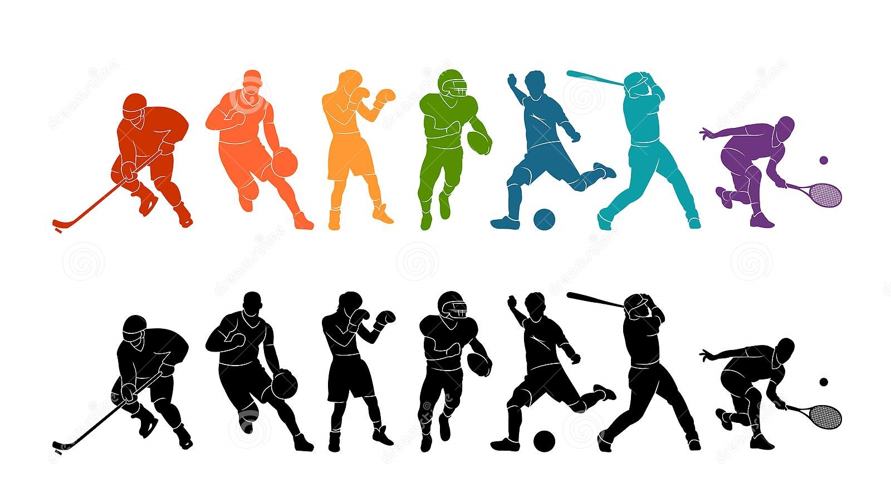

🎉News for all kind of sport lovers!
Football news⚽🎊
Basketball news🏀🎊
Football news
Match report: Southampton 1-0 Arsenal
Karim Benzema's last-gasp winner completes stunning Real Madrid comeback against Sevilla - European round-up
Basketball news
NBA Offseason Guide 2022: How the Portland Trail Blazers can bounce back next season
NBA playoffs 2022: Under-the-radar X factors for all 16 teams
